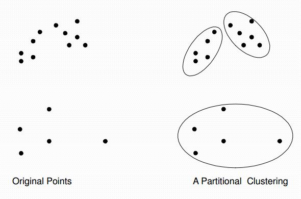

Selamat membaca. . .¶
K-Means Clustering¶
Apa itu K-Means Clustering?¶
K-Means Clustering adalah proses untuk mengelompokan data ke dalam beberapa cluster atau kelompok sehingga data dalam satu cluster memiliki tingkat kemiripan yang maksimum dan data antar cluster memiliki kemiripan yang minimum.
Clustering juga dikenal sebagai data segmentasi karena clustering mempartisi banyak data set ke dalam banyak group berdasarkan kesamaannya.
Terdapat dua jenis data clustering yang sering dipergunakan dalam proses pengelompokan data yaitu Hierarchical dan Non-Hierarchical, dan K-Means merupakan salah satu metode data clustering non-hierarchical atau Partitional Clustering.

Metode K-Means Clustering berusaha mengelompokkan data yang ada ke dalam beberapa kelompok, dimana data dalam satu kelompok mempunyai karakteristik yang sama satu sama lainnya dan mempunyai karakteristik yang berbeda dengan data yang ada di dalam kelompok yang lain.

Langkah-Langkah K-mean clustering :
-
Menentukan secara acak K titik data sebagai pusatcluster yang disebut centroid.
-
Menghitung jarak ke masing-masing pusat cluster(centroid).
-
Kemudian menghitung rata-rata dari anggota cluster.
-
Ulangai langkah 2 dan 3 sampai tidak ada dari anggota setiap cluster berubah tempat kelompoknya. Dan dikarenakan dalam contoh ini menghasilkan anggota cluster yang tidak berubah tempat kelompoknya maka tidak ada pengulangan untuk langkah 2 dan 3.
Langkah-Langkah implementasi K-mean clustering pada data iris :¶
1.Menentukan secara acak K titik data sebagai pusat cluster yang disebut centroid.

Disini saya menggunakan 3 centroid, yakni individu 2,3 dan 4.

2.Menghitung jarak ke masing-masing pusat cluster (centroid). Penyelesaian menggunakan Microsoft Excel dengan rumus sebagai berikut:
= SQRT((Ki - Xi)^2+ (Kj – Xj)^2+.......+(Kn– Xn)^2)Keterangan:
K= Cluster
X= Objek
Selanjutnya masukkan anggota centroid tertentu yang memiliki jarak terdekat dengan pusat cluster, jarak terdekat dipilih dari anggota centroid yang paling mendekati 0 karena jika nilai semakin mendekati 0 maka akan semakin mirip dengan pusat cluster (centroid). Lalu tandai masing-masing yang masuk ke cluster tertentu seperti dalam tabel berikut:

Sehingga, Kita dapatkan tiga cluster dengan anggotanya pada individu: {1,2}, {4,5,6,} dan {3,7}
3.Kemudian menghitung rata-rata dari anggota cluster. Penyelesaian menggunakan Microsoft Excel dengan rumus sebagai berikut:
=1/n*SUM( Xi + Xj+........+ Xn) Keterangan:
n = Jumlah anggota cluster
X = Anggota cluster
Sehingga didapatkan tabel rata-rata sebagai berikut:
Selanjutnya hasil perhitungan rata-rata tersebut dipergunakan untuk menghitung centroid baru, dengan penyelesaian menggunakan Microsoft Excel dengan rumus sebagai berikut:
= SQRT((x ̅i - Xi)^2+ (x ̅j – Xj)^2+.......+(x ̅n– Xn)^2)Selanjutnya masukkan anggota centroid tertentu yang memiliki jarak terdekat dengan pusat cluster, jarak terdekat dipilih dari anggota centroid yang paling mendekati 0 karena jika nilai semakin mendekati 0 maka akan semakin mirip. Lalu tandai masing-masing yang masuk ke cluster tertentu seperti dalam tabel berikut:
Sehingga, Kita dapatkan tiga cluster dengan anggotanya pada individu: {1,2}, {4,5,6,} dan {3,7}
4.Ulangi langkah 2 dan 3 sampai tidak ada dari anggota setiap cluster berubah tempat kelompoknya. Dan dikarenakan dalam contoh ini mengahasilkan anggota cluster yang tidak berubah tempat kelompoknya maka tidak ada pengulangan untuk langkah 2 dan 3.
MENENTUKAN JUMLAH CLUSTER
Implementasi pada Microsoft Excel sebagai berikut:
MENGHITUNG SHILHOUTTE
1.Hitung rata-rata jarak objek dengan semua objek lain yang berada di dalam satu cluster dengan persamaan :
Dengan penyelesaian menggunakan Ms.Excel, rumusnya adalah sebagai berikut :
Keterangan:
X = Objek
2.Hitung rata-rata jarak objek dengan semua objek lain yang berada pada cluster lain, dengan persamaan :
Penyelesaian menghitung jarak menggunakan Microsoft Excel dengan rumus sebagai berikut:
Keterangan:
K = Anggota Clust
X = Objek
Selanjutnya menghitung rata-rata jarak menggunakan Microsoft Excel dengan rumus sebagai berikut:
=1/n*SUM( Di + Dj+........+ Dn)
Keterangan:
D = Jarak
n = Banyaknya jarak
Setelah nilai untuk mendapat nilai bi maka cari nilai rata-rata antar cluster yang paling minimum
Hitung nilai silhouette coefficient,
dengan penyelesaian menggunakan Microsoft Excel dengan rumus sebagai berikut:
Si = 1- (ai /bi)HASIL IMPLEMENTASI PADA EXCEL
1.Shilhoutte Cluster 1

Hasil nilai silhouette coefficient adalah mendekati 1 maka pengelompokan data didalam cluster 1 bersifat baik.
2.Shilhoutte Cluster 2

Hasil nilai silhouette coefficient adalah mendekati -1 maka pengelompokan data didalam cluster 1 bersifat kurang baik.
3.Shilhoutte Cluster 3

Hasil nilai silhouette coefficient adalah mendekati -1 maka pengelompokan data didalam cluster 1 bersifat kurang baik.
KNN¶
Algoritma K-Nearst Neighbor¶
Algoritma k-nearest neighbor (KNN) adalah sebuah metode untuk melakukan klasifikasi tehadap objek berdasarkan data pembelajaran yang jaraknya paling dekat dengan objek tersebut. KNN termasuk algoritm supervised learning dimana hasil dari query instance yang baru diklasifikasikan berdasarkan mayoritas dari kategori pada KNN. Nanti kelas yang paling banyak muncullah yang akan menjadi kelas hasil klasifikasi.
Tujuan dari algoritma ini adalah mengklasifikasikan objek baru berdasarkan atribut dan training sample. Classifier tidak menggunakan model apapun untuk dicocokkan dan hanya berdasarkan pada memori. Diberikan titik query, akan ditemukan sejumlah k obyek atau (titik training) yang paling dekat dengan titik query. Klasifikasi menggunakan voting terbanyak diantara klasifikasi dari k objek. Algoritma k-nearest neighbor (KNN) menggunakan klasifikasi ketetanggaan sebagai nilai prediksi dari query instance yang baru.
Algoritma KNN sangat sederhana, bekerja berdasarkan jarak terpendek dari query intance ke trining sample untuk menentukan KNN-nya. Training sample diproyeksikan ke ruang berdimensi banyak, dimana masing-masing dimensi merepresentasikan fitur dari data. Ruang ini dibagi menjadi bagian-bagian berdasarkan klasifikasi training sample. Sebuah titik pada ruang ini ditandai kelas c, juka kelas c merupakn klasiifikasi yang paling banyak ditemui pada k buah tetangga terdekat dari titik tersebut. Dekat atau jauhnya tetangga biasaya dihitung berdasarkan Euclidien Distance.
Jarak Euclidien Distance paling sering digunakan untuk menghitung jarak. Jarak euclidien berfungsi menguji ukuran yang bisa digunakan sebagai interpretasi kedekatan jarak antara dua obyek, yang direpresentasikan adalah sebagai berikut :

Dimana matriks D(a,b) adalah jarak skalar dari kedua vektor a dan b dari matriks dengan ukuran d dimensi.
Semakin besar nilai D akan semakin jauh tingkat kesamaan antara kedua individu dan sebaliknya jika nilai D semakin kecil maka akan semakin dekat tingkat keserupaan antara individu tersebut.
Nilai k yang terbaik untuk algoritma ini tergantung pada dat. Secara umum, nilai k yang tinggi akan mengurangi efek noise pada klasifikasi, tetapi membuat batasan antara setiap klasifikasi menjadi semakin kabur. Nilai k yang bagus dapat dipilih dengan optimasi parameter, misal dengan menggunakan cross-validation.
Ketepatan algoritma KNN sangat dipengaruhi oleh ada atau tidaknya fitur-fitur yang tidak relevan atau jika bobot fitur tersebut tidak setara dengan relevansinya terhadap klasifikasi. Riset terhadap algoritma ini sebagian besar membahas bagaimana memilih dan memberi dan bobot terhadap fitur agar performa relevansinya terhadap klasifikasi.
-
Langkah-langkah untuk menghitung metode K-Nearest Neighbor :¶
1.Menentukan parameter k (jumlah tetangga paling dekat)
2.Menghitung kuadrat jarakk euclid(query instance) masing-masing objek terhadap data sampel yang diberikan.
3.Kemudian mengurutkan onjek-objek tersebut kedalam kelompok yang mempunyai jarak euclid terkecil.
4.Mengumpulkan kategori
5.Dengan menggunakan kategori nearest neighbor yang paling mayoritas maka dapat diprediksikan nilai query instance yang telah dihitung.
- Implementasi
Implementasi Menggunakan EXCEL
Terdapat data yang berasal dari datasets tentang klasifikasi bunga (iris) dengan ciri-ciri yang sudah dituliskan pada ke empat kolom, yaitu kolom sepallenght, sepalwidth, petallenght, dan sepalwidth .
Tabel 1.1 klasifikasi data
.PNG)
Kemudian akan dikelompokkan kembali bunga dengan data testing, data testing sebanyak 15 data.
Tabel 2.Data testing
.PNG)
Kemudian akan diambil satu baris dari data testing tersebut, misal pada baris pertama dengan nilai sepallenght = 5,1 sepalwidth=3,5 petallenght=1,4 dan sepalwidth=0,2 untuk dapat mengklasifikasikan bunga tersebut termasuk dalam kelas iris-setosa, iris-virginica atau iris-versicolor.
Adapun prosedur k-nearest neighbor adalah sebagai berikut :
1.Menentukan parameter K (Jumlah tetangga paling dekat), misalkan kita menggunakan K=1 sampai K=5
2.Menghitung kuadrat jarak euclid (query-instance) masing-masing objek terhadap contoh data yang diberikan.
Koordinat query -instance adalah ((5,1), (3,5), (1,4), (0,2)) dimana nilai tersebut berasal dari nilai atribut yang akan diproduksi.
Tabel 1.3 perhitungan jarak euclid
.PNG)
Rumus yang diimplementasikan ke dalam excel

Lambang $ pada rumus tersebut berfungsi untuk mengunci rumus pada suatu cell secara mutlak (baik baris maupun kolom)
3.Kemudian urutkan jarak ecluid tersebut dari jarak terkecil ke terbesar dengan cara pilih Data – Filter – Klik sort smallest to largest
Tabel 1.4 Perhitungan jarak ecluid terkecil

4.Mengumpulkan bunga kedalam kelasnya masing-masing
Tabel 1.5 Hasil klasifikasi
Dengan menggunakan data nearest neighbor yang paling besar (maksimal) nilainya, maka dapat diprediksi nilai query instance yang telah dihitung. Berdasarkan hasil diatas maka data pertama masuk kelas iris-setosa
Implementasi KNN menggunakan Python (Program)
Setelah memahami tahap-tahap perhitungan KNN dalam excel, selanjutnya kita melakukan perhitungan dengan menggunakan bahasa pemrogaman python. Agar program ini dapat berjalan maka harus ada library didalam python tersebut. Library yang harus ada antara lain pandas, dan scikit-learn. Kedua library tersebut dapat di install melalui command prompt.
Langkah 1. install pandan dan scikit learn
Berikut cara untuk menginstall pandas dan scikit learn pada command prompt :
pip install pandaspip install scikit-learnPandas berfungsi untuk memanggil data dari dataset tersebut
Scikit-learn berfungsi untuk memanggil rumus yang digunakan untuk menentukan neighbod (K)
Langkah-Langkah yang ada dalam program ini sedikit berbeda dengan langkah-langkah yang ada pada excel. Jika dalam excel hasil klasifikasi langsung muncul saat rumus dimasukkan, berbeda dengan program pada phyton, dalam program ini kita harus menginputkan data baru untuk bisa melihat hasil dari program tersebut.
Langkah 2. Tulis kode program pada lembar kerja python
Berikut adalah source code dari program :
[SOURCE CODE]
import pandas as pd
from sklearn.neighbors import KNeighborsClassifier
from sklearn import model_selection
from sklearn.model_selection import train_test_split
#memuat file csv
df=pd.read_csv('Iris.csv')
#Inisialisasi KNN
clf=KNeighborsClassifier(n_neighbors=3)
# Dataset validasi dataset
array = df.values
X = array[:,1:5]
Y = array[:,5]
# Sepertiga data sebagai bagian dari set tes
validation_size = 15
seed = 7
X_train, X_validation, Y_train, Y_validation = model_selection.train_test_split(X, Y, test_size=validation_size, random_state=seed)
#Menyesuaikan set training
clf.fit(X_train, Y_train)
#Predicting untuk Set Tes
pred_clf = clf.predict(X_validation)
#Buat file prediksi dengan gabungan data asli dan prediksi
#Membentuk kembali diperlukan untuk melakukan penggabungan
pred_clf_df = pd.DataFrame(pred_clf.reshape(15,1))
#Ganti nama kolom untuk menunjukkan prediksi
pred_clf_df.rename(columns={0:'Prediction'}, inplace=True)
#membentuk kembali dataset uji
X_validation_df = pd.DataFrame(X_validation.reshape(15 ,4))
#menggabungkan dua bingkai data panda di atas kolom untuk membuat dataset prediksi
pred_outcome = pd.concat([X_validation_df, pred_clf_df], axis=1, join_axes=[X_validation_df.index])
pred_outcome.rename(columns = {0:'SepalLengthCm', 1:'SepalWidthCm', 2:'PetalLengthCm', 3:'PetalWidthCm'}, inplace=True)
del df['Id']
#menggabungkan prediksi dengan dataset asli
pred_comp = pd.merge(df,pred_outcome, on=['SepalLengthCm','SepalWidthCm','PetalLengthCm','PetalWidthCm'])
#cetak 10 baris prediksi akhir
print((pred_comp).head(15))
print ("\n")
# make prediction
sl = float(input('Enter sepal length (cm): '))
sw = float(input('Enter sepal width (cm): '))
tl = float(input('Enter tepal length (cm): '))
tw = float(input('Enter tepal width (cm): '))
dataClass = clf.predict([[sl,sw,tl,tw]])
print ("\n")
print('Prediction: ', dataClass)
print ("\n")
Langkah 3.Jalankan program (run) program, dan hasil program nya adalah sebagai berikut
SepalLengthCm SepalWidthCm ... Species Prediction
0 4.8 3.4 ... Iris-setosa Iris-setosa
1 5.2 3.4 ... Iris-setosa Iris-setosa
2 5.2 4.1 ... Iris-setosa Iris-setosa
3 5 3.5 ... Iris-setosa Iris-setosa
4 4.5 2.3 ... Iris-setosa Iris-setosa
5 6.4 3.2 ... Iris-versicolor Iris-versicolor
6 6.9 3.1 ... Iris-versicolor Iris-versicolor
7 5.6 3 ... Iris-versicolor Iris-versicolor
8 6.7 3 ... Iris-versicolor Iris-versicolor
9 5.4 3 ... Iris-versicolor Iris-versicolor
10 6 3.4 ... Iris-versicolor Iris-versicolor
11 5.6 2.7 ... Iris-versicolor Iris-versicolor
12 4.9 2.5 ... Iris-virginica Iris-versicolor
13 7.2 3.6 ... Iris-virginica Iris-virginica
14 5.9 3 ... Iris-virginica Iris-virginica
[15 rows x 6 columnsLangkah 4.Inputkan data baru yang akan diklasifikasikan
Enter sepal length (cm): 3
Enter sepal width (cm): 4.5
Enter petal length (cm): 5
Enter petal width (cm): 4
Hasil inputan
Prediction: ['Iris-virginica']Hasil dari inputan sepallength (3), sepalwidth (4.5), petallenght (5), petalwidth (4) adalah iris virginica.